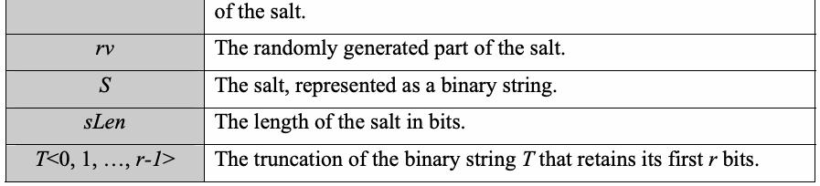
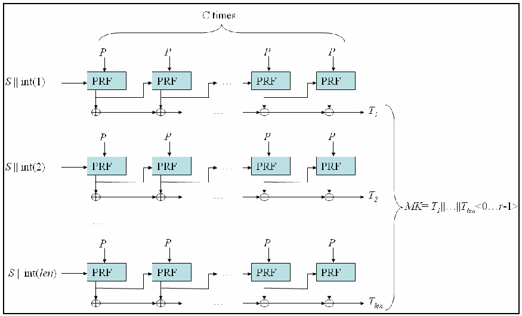
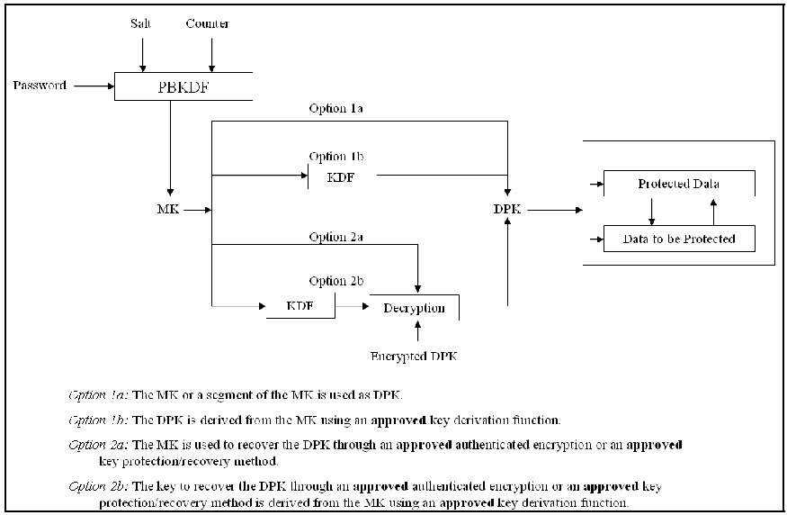

NIST Special Publication · PDF 原文抽出
Recommendation for Password-Based Key Derivation: Part 1: Storage Applications
パスワードベース鍵導出に関する推奨事項：第1部：ストレージアプリケーション
NIST SP 800-132（Recommendation for Password-Based Key Derivation: Part 1: Storage Applications）の英文と日本語訳を段落ごとに並べた閲覧用ページです。保存データまたはデータ保護鍵を保護するため、パスワードやパスフレーズからマスター鍵を導出する手法を規定します。CSRCは2023年5月11日に改訂を決定し、公開草案の準備は未開始と告知しています。 翻訳は非公式です。要件の確認にはNIST の正式版 PDFを参照してください。
PDF から抽出した原文は原本との照合待ちです。
NIST Special Publication 800-132
NIST特別刊行物800-132
未レビュー訳Recommendation for Password-Based Key
パスワードベース鍵導出に関する推奨事項
未レビュー訳Derivation
原文のみ
Part 1: Storage Applications
第1部：ストレージアプリケーション
未レビュー訳Meltem Sönmez Turan, Elaine Barker, William Burr, and Lily Chen
Meltem Sönmez Turan、Elaine Barker、William Burr、Lily Chen
未レビュー訳Computer Security Division Information Technology Laboratory
コンピュータセキュリティ部門、情報技術研究所
未レビュー訳C O M P U T E R S E C U R I T Y
コンピュータセキュリティ
未レビュー訳December 2010
2010年12月
未レビュー訳周囲にDEPARTMENT OF COMMERCEおよびUNITED STATES OF AMERICAと記された米国商務省の紋章
U.S. Department of Commerce
米国商務省
未レビュー訳Gary Locke, Secretary
長官 Gary Locke
未レビュー訳National Institute of Standards and Technology
米国国立標準技術研究所
未レビュー訳Patrick D. Gallagher, Director
所長 Patrick D. Gallagher
未レビュー訳Abstract
概要
未レビュー訳This Recommendation specifies techniques for the derivation of master keys from passwords or
本勧告は、保存された電子データやデータ保護鍵を保護するため、パスワードまたはパスフレーズからマスター鍵を導出する手法を規定します。
未レビュー訳passphrases to protect stored electronic data or data protection keys.
原文のみ
KEY WORDS: Password-Based Key Derivation Functions, Salt, Iteration Count, Protection of
キーワード：パスワードベース鍵導出関数、ソルト、反復回数、保存データの保護
未レビュー訳data in storage
原文のみ
Acknowledgements
謝辞
未レビュー訳The authors, Meltem Sönmez Turan, Elaine Barker, William Burr, and Lily Chen of the National
本書の著者である米国国立標準技術研究所（NIST）のMeltem Sönmez Turan、Elaine Barker、William Burr、Lily Chenは、NISTの同僚であるShu-jen H. Chang、Morris Dworkin、Allen Roginsky、John Kelsey、ならびに米国国家安全保障局（NSA）のMorgan Stern、Matt Yurkewych、Kevin Igoe、Rich Davis、Chris Beanに、有益な議論と貴重なコメントを寄せていただいたことに感謝します。
未レビュー訳Institute of Standards and Technology (NIST), would like to thank their colleagues at NIST,
原文のみ
Shu-jen H. Chang, Morris Dworkin, Allen Roginsky, and John Kelsey, and also Morgan Stern,
原文のみ
Matt Yurkewych, Kevin Igoe, Rich Davis and Chris Bean of the National Security Agency, for
原文のみ
helpful discussions and valuable comments.
原文のみ
Table of Contents
目次
未レビュー訳1 Introduction — 1
1 はじめに — 1
未レビュー訳2 Authority — 1
2 権限 — 1
未レビュー訳3 Definitions, Acronyms and Symbols — 2
3 定義、略語および記号 — 2
未レビュー訳3.1 Definitions — 2
3.1 定義 — 2
未レビュー訳3.2 Acronyms — 4
3.2 略語 — 4
未レビュー訳3.3 Symbols — 4
3.3 記号 — 4
未レビュー訳4 General Discussion — 5
4 総論 — 5
未レビュー訳5 Password-Based Key Derivation Functions — 5
5 パスワードベース鍵導出関数 — 5
未レビュー訳5.1 The Salt (S) — 6
5.1 ソルト（S） — 6
未レビュー訳5.2 The Iteration Count (C) — 6
5.2 反復回数（C） — 6
未レビュー訳5.3 PBKDF Specification — 7
5.3 PBKDFの仕様 — 7
未レビュー訳5.4 Using the Derived Master Key to Protect Data — 8
5.4 導出したマスター鍵を用いたデータ保護 — 8
未レビュー訳6 References — 10
6 参考文献 — 10
未レビュー訳Appendix A Security Considerations — 11
付録A セキュリティ上の考慮事項 — 11
未レビュー訳A.1 User-Selected Passwords — 11
A.1 利用者が選択するパスワード — 11
未レビュー訳A.2 PBKDF — 12
A.2 PBKDF — 12
未レビュー訳A.2.1 Length of the Salt — 12
A.2.1 ソルトの長さ — 12
未レビュー訳A.2.2 Iteration Count — 12
A.2.2 反復回数 — 12
未レビュー訳A.3 Protection of DPK — 14
A.3 DPKの保護 — 14
未レビュー訳Appendix B Conformance to “Non-testable” Requirements — 14
付録B「テスト不可能な」要件への適合 — 14
未レビュー訳Recommendation for Password-Based Key Derivation
パスワードベース鍵導出に関する推奨事項
未レビュー訳1 Introduction
1 はじめに
未レビュー訳The randomness of cryptographic keys is essential for the security of cryptographic
暗号鍵のランダム性は、暗号アプリケーションのセキュリティに不可欠です。電子保存データを保護する場合など、一部のアプリケーションでは、データへのアクセス資格を持つ利用者に求める入力がパスワードだけのことがあります。これらのパスワードはエントロピーが低く、ランダム性も十分でない可能性があるため、暗号鍵として直接使用するのに適していません。
未レビュー訳applications. In some applications, such as the protection of electronically stored data,
原文のみ
passwords may be the only input required from the users who are eligible to access the
原文のみ
data. Due to the low entropy and possibly poor randomness of those passwords, they are
原文のみ
not suitable to be used directly as cryptographic keys.
原文のみ
This Recommendation specifies a family of password-based key derivation functions
本勧告は、パスワードまたはパスフレーズから暗号鍵を導出し、電子保存データまたはデータ保護鍵を保護するための一連のパスワードベース鍵導出関数（PBKDF）を規定します。
未レビュー訳(PBKDFs) for deriving cryptographic keys from passwords or passphrases for the
原文のみ
protection of electronically-stored data or for the protection of data protection keys.
原文のみ
2 Authority
2 権限
未レビュー訳This publication has been developed by the National Institute of Standards and
本刊行物は、2002年連邦情報セキュリティ管理法（FISMA、Public Law 107-347）に基づく法定責務を遂行するため、米国国立標準技術研究所（NIST）が作成しました。NISTは、連邦情報システムの最低要件を含む基準および指針を策定する責務を負いますが、これらの基準および指針は国家安全保障システムには適用されません。
未レビュー訳Technology (NIST) in furtherance of its statutory responsibilities under the Federal
原文のみ
Information Security Management Act (FISMA) of 2002, Public Law 107-347. NIST is
原文のみ
responsible for developing standards and guidelines, including minimum requirements
原文のみ
for federal information systems, but such standards and guidelines shall not apply to
原文のみ
national security systems.
原文のみ
This Recommendation has been prepared for use by Federal agencies. It may be used by
本勧告は連邦機関が使用するために作成されました。非政府組織も任意で使用でき、米国内では著作権の対象ではありません。NISTの帰属表示を付すことを歓迎します。
未レビュー訳non-governmental organizations on a voluntary basis and is not subject to copyright.
原文のみ
(Attribution would be appreciated by NIST.)
原文のみ
Nothing in this document should be taken to contradict the standards and guidelines made
本書のいかなる内容も、法的権限に基づき商務長官が連邦機関に義務付け、拘束力を持たせている基準および指針に反すると解釈してはなりません。また、本指針は商務長官、行政管理予算局（OMB）長官、その他の連邦当局者の既存権限を変更または置き換えるものとして解釈してはなりません。
未レビュー訳mandatory and binding on federal agencies by the Secretary of Commerce under statutory
原文のみ
authority. Nor should these guidelines be interpreted as altering or superseding the
原文のみ
existing authorities of the Secretary of Commerce, Director of the OMB, or any other
原文のみ
federal official.
原文のみ
Conformance testing for implementations of this Recommendation will be conducted
本勧告の実装の適合性試験は、暗号モジュール検証プログラム（CMVP）および暗号アルゴリズム検証プログラム（CAVP）の枠組みで実施されます。本勧告の要件は「shall」という語で示されます。一部の要件はCMVPまたはCAVPの検証試験の対象外となる場合があり、その場合、本勧告を組み込むアプリケーションを使用、実装、導入、または構成する主体が責任を負います。
未レビュー訳within the framework of the Cryptographic Module Validation Program (CMVP) and the
原文のみ
Cryptographic Algorithm Validation Program (CAVP). The requirements of this
原文のみ
Recommendation are indicated by the word “shall”. Some of these requirements may be
原文のみ
out-of-scope for CMVP or CAVP validation testing, and thus are the responsibility of
原文のみ
entities using, implementing, installing or configuring applications that incorporate this
原文のみ
Recommendation.
原文のみ
3 Definitions, Acronyms and Symbols
3 定義、略語および記号
未レビュー訳3.1 Definitions
3.1 定義
未レビュー訳原本の表画像

原本の表画像
原本の表画像
原本の表画像

3.2 Acronyms
3.2 略語
未レビュー訳| Acronyms | Meaning |
| CAVP | Cryptographic Algorithm Validation Program |
| CMVP | Cryptographic Module Validation Program |
| DPK | Data Protection Key |
| GCM | Galois/Counter Mode |
| HMAC | Keyed-Hash Message Authentication Code (as specified in FIPS 198-1 [1]). |
| KDF | Key Derivation Function |
| MK | Master Key |
| PRF | Pseudorandom Function |
| PBKDF | Password-based Key Derivation Function |
| SHA | Secure Hash Algorithm |
原本の表画像

| 略語 | 意味 |
| CAVP | 暗号アルゴリズム検証プログラム |
| CMVP | 暗号モジュール検証プログラム |
| DPK | データ保護鍵 |
| GCM | ガロア／カウンターモード |
| HMAC | 鍵付きハッシュメッセージ認証コード（FIPS 198-1 [1]で規定） |
| KDF | 鍵導出関数 |
| MK | マスター鍵 |
| PRF | 疑似ランダム関数 |
| PBKDF | パスワードベース鍵導出関数 |
| SHA | セキュアハッシュアルゴリズム |
3.3 Symbols
3.3 記号
未レビュー訳| Symbol | Meaning |
| | Bit-wise exclusive-or. |
| || | Concatenation. |
| a | The ceiling of a: the smallest integer that is greater than or equal to a. For example, 5 = 5, 5.3 = 6, and –2.1 = –2. |
| C | Iteration count. |
| hLen | The length of the output of PRF in bits. |
| Int(i) | 32-bit encoding of integer i, with the most significant bit on the left. |
| kLen | The length of the output of PBKDF in bits. |
| len | An integer that represents the number of PRF output blocks to be concatenated in order to obtain kLen bits of MK, i.e., len = kLen / hLen |
| mk | The MK derived using the PBKDF. |
| P | A password or passphrase, represented as a binary string. |
| purpose | A binary string defined for a specific application, message or a user which is optionally prepended to the randomly generated part |
原本の表画像

| 記号 | 意味 |
| ⊕ | ビット単位の排他的論理和。 |
| || | 連結。 |
| ⌈a⌉ | a以上となる最小の整数。例えば、⌈5⌉=5、⌈5.3⌉=6、⌈−2.1⌉=−2。 |
| C | 反復回数。 |
| hLen | PRFのビット単位の出力長。 |
| Int(i) | 整数iを32ビットで符号化したもの。最上位ビットを左側に置く。 |
| kLen | PBKDFのビット単位の出力長。 |
| len | MKのkLenビットを得るために連結するPRF出力ブロック数を表す整数。すなわち、len = ⌈kLen / hLen⌉。 |
| mk | PBKDFから導出されるMK。 |
| P | バイナリ文字列で表したパスワードまたはパスフレーズ。 |
| purpose | 特定のアプリケーション、メッセージ、または利用者向けに定義されたバイナリ文字列。ソルトのランダム生成部分の前に任意で付加される。 |
| of the salt. | |
| rv | The randomly generated part of the salt. |
| S | The salt, represented as a binary string. |
| sLen | The length of the salt in bits. |
| T<0, 1, …, r-1> | The truncation of the binary string T that retains its first r bits. |
原本の表画像

| （前頁のpurposeの定義に統合済み） | |
| rv | ソルトのランダムに生成される部分。 |
| S | バイナリ文字列で表したソルト。 |
| sLen | ビット単位のソルト長。 |
| T<0, 1, …, r-1> | バイナリ文字列Tの先頭rビットを残す切詰め。 |
4 General Discussion
4 総論
未レビュー訳This Recommendation specifies a family of functions to derive cryptographic keying
本勧告は、パスワードまたはパスフレーズから暗号鍵素材を導出する関数群を規定します。導出された鍵素材はマスター鍵（MK）と呼び、mkと表記します。MKは、(1)データ保護鍵（DPK）を1つ以上生成してデータを保護するため、または(2)既存のDPK、あるいは承認済みの鍵導出関数（KDF）[2]を用いてMKから生成したDPKを保護する中間鍵を生成するために使用します。MKは、これら以外の目的に使用してはなりません。
未レビュー訳material from a password or a passphrase. The derived keying material is called a Master
原文のみ
Key (MK), denoted as mk. The MK is used either 1) to generate one or more Data
原文のみ
Protection Keys (DPKs) to protect data, or 2) to generate an intermediate key to protect
原文のみ
one or more existing DPKs or generated from the MK using an approved Key Derivation
原文のみ
Function (KDF) as defined in [2]. The MK shall not be used for other purposes.
原文のみ
5 Password-Based Key Derivation Functions
5 パスワードベース鍵導出関数
未レビュー訳A password or a passphrase is a string of characters that is usually chosen by a user.
パスワードまたはパスフレーズは、通常、利用者が選択する文字列です。パスワードは多くの場合、資源へのアクセスを許可するために利用者を認証する目的で使われます。利用者が選択するパスワードの多くはエントロピーが低く、ランダム性も弱いため、付録A.1で述べるとおり、暗号鍵として直接使用してはなりません。ただし、ストレージデバイス内のデータ保護など一部の用途では、当該データを保護する暗号アルゴリズムが利用できる秘密情報がパスワードだけの場合があります。本節では、そのような用途のためのPBKDF群を規定します。
未レビュー訳Passwords are often used to authenticate a user in order to allow access to a resource.
原文のみ
Since most user-chosen passwords have low entropy and weak randomness properties, as
原文のみ
discussed in Appendix A.1, these passwords shall not be used directly as cryptographic
原文のみ
keys. However, in certain applications, such as protecting data in storage devices, the
原文のみ
password may be the only secret information that is available to the cryptographic
原文のみ
algorithm that protects the data. This section specifies a family of PBKDFs for such
原文のみ
applications.
原文のみ
KDFs are deterministic algorithms that are used to derive cryptographic keying material
KDFは秘密値（パスワードなど）から暗号鍵素材を導出する決定的アルゴリズムです。PBKDF群の各関数は、疑似ランダム関数（PRF）と固定の反復回数Cで定義されます。PBKDFの実行入力は、パスワードP、ソルトS、およびマスター鍵の所望ビット長kLenです。式は mk = PBKDF_{PRF,C}(P, S, kLen) です。
未レビュー訳from a secret value, such as a password. Each PBKDF in the family is defined by the
原文のみ
choice of a Pseudorandom Function (PRF) and a fixed iteration count, denoted as C. The
原文のみ
input to an execution of PBKDF includes a password, denoted as P, a salt, denoted as S,
原文のみ
and an indication of the desired length of the MK in bits, denoted as kLen. Symbolically: mk = PBKDF (P, S, kLen). (PRF, C)
原文のみ
The kLen value shall be at least 112 bits in length.
kLenは112ビット以上でなければなりません。
未レビュー訳A generic diagram of the PBKDF is given in Figure 1. The design rationale on generic
PBKDFの一般的な構成図を図1に示します。汎用PBKDFの設計根拠については付録A.2を参照してください。
未レビュー訳PBKDFs is available in Appendix A.2.
原文のみ

パスワード、鍵の長さ、ソルトを入力とし、PRFと反復回数Cを用いるPBKDFからマスター鍵を出力する図
Figure 1: A generic diagram of the PBKDF
図1：PBKDFの一般的な構成図
未レビュー訳5.1 The Salt (S)
5.1 ソルト（S）
未レビュー訳All or a portion of the salt shall be generated using an approved Random Bit Generator
ソルトの全部または一部は、承認済み乱数ビット生成器を用いて生成しなければなりません（例：[5]参照）。ソルトのランダム生成部分は128ビット以上でなければなりません。
未レビュー訳(e.g., see [5]). The length of the randomly-generated portion of the salt shall be at least
原文のみ
128 bits.
原文のみ
More information on the length and optional format of the salt is available in Appendix
ソルトの長さと任意の形式については、付録A.2.1を参照してください。
未レビュー訳A.2.1.
原文のみ
5.2 The Iteration Count (C)
5.2 反復回数（C）
未レビュー訳The iteration count C is a fixed value that determines how many times the PRF iterates to
反復回数Cは、PRFがMKの1ブロックを生成するために何回反復するかを定める固定値です。入力されたパスワードを使った鍵の生成時間が利用者に許容される範囲で、反復回数はできるだけ大きく選定しなければなりません。利用者が使う機器の処理能力は、スマートカードから高性能ワークステーションやサーバーまでさまざまであるため、適切な反復回数もそれに応じて異なります。推奨される最小の反復回数は1,000です。特に重要な鍵の場合、非常に高性能なシステムを使う場合、または利用者が体感する処理性能が重要でないシステムでは、10,000,000が適切な場合があります。
未レビュー訳generate one block of the MK. The iteration count shall be selected as large as possible,
原文のみ
as long as the time required to generate the key using the entered password is acceptable
原文のみ
for the users. Since the capability of user machines varies (e.g., from a smart card to high-
原文のみ
end workstations or servers), reasonable iteration counts vary accordingly. A minimum
原文のみ
iteration count of 1,000 is recommended. For especially critical keys, or for very
原文のみ
powerful systems or systems where user-perceived performance is not critical, an
原文のみ
iteration count of 10,000,000 may be appropriate.
原文のみ
More information on the selection of the iteration count is available in Appendix A.2.2.
反復回数の選定に関する詳細は、付録A.2.2を参照してください。
未レビュー訳5.3 PBKDF Specification
5.3 PBKDFの仕様
未レビュー訳The following algorithm for the derivation of MKs from passwords is based on an
パスワードからMKを導出する以下のアルゴリズムは、[6]で規定されたアルゴリズムに基づいています。[6]では、このアルゴリズムはPBKDF2として規定され、PRFとしてSHA-1を用いるHMAC [1]を使用していました。本勧告は、承認済みの任意のハッシュ関数をPRFに用いるHMACによるPBKDFとして、PBKDF2を承認します。ハッシュ関数のダイジェスト長をビット数で表した値をhLenとします。
未レビュー訳algorithm specified in [6], where it was specified as PBKDF2 and used HMAC [1] with
原文のみ
SHA-1 as a PRF. This Recommendation approves PBKDF2 as the PBKDF using HMAC
原文のみ
with any approved hash function as the PRF. The digest size of the hash function in bits
原文のみ
is denoted as hLen.
原文のみ
The details of the PBKDF algorithm are given below.
PBKDFアルゴリズムの詳細を以下に示します。
未レビュー訳Input: P Password S Salt
入力：P＝パスワード、S＝ソルト
未レビュー訳原文のみ
Iteration count Length of MK in bits; at most (232-1) hLen
C＝反復回数。kLen＝MKの長さ（ビット単位）；最大値は(2^32−1) × hLen。
未レビュー訳kLen
原文のみ
Parameter: PRF HMAC with an approved hash function hlen Digest size of the hash function Output: mk Master key Algorithm: If (kLen > (232-1) hLen) Return an error indicator and stop ;
パラメータ：PRF＝承認済みハッシュ関数を用いるHMAC。hLen＝ハッシュ関数のダイジェスト長。出力：mk＝マスター鍵。アルゴリズム：kLen > (2^32−1) × hLen の場合、エラー指標を返して停止する。
未レビュー訳len = kLen / hLen ;
len = ⌈kLen / hLen⌉; r = kLen − (len − 1) × hLen; i を1からlenまで順に処理する。T_i = 0; U_0 = S || Int(i); j を1からCまで順に処理する。U_j = HMAC(P, U_{j−1}); T_i = T_i ⊕ U_j。mk = T_1 || T_2 || … || T_len⟨0…r−1⟩ を返す。
未レビュー訳r = kLen – (len – 1) hLen ; For i = 1 to len
原文のみ
T = 0;
原文のみ
i U = S || Int(i); 0 For j = 1 to C
原文のみ
U = HMAC(P, U )
原文のみ
原文のみ
j-1
原文のみ
T = T U
原文のみ
i i j Return mk = T || T || … || T <0…r-1>
原文のみ
Figure 2 is a general diagram of the PBKDF.
図2に、PBKDFの一般的な構成を示します。
未レビュー訳
C回のPRF反復で各T_iを生成し、ブロックを連結してMKを導出するPBKDFの模式図
Figure 2: A general diagram of the PBKDF
図2：PBKDFの一般的な構成図
未レビュー訳5.4 Using the Derived Master Key to Protect Data
5.4 導出したマスター鍵によるデータ保護
未レビュー訳In this section, two options will be provided to protect data using an MK. In both options,
この節では、MKを使用してデータを保護する2つの選択肢を示します。どちらの選択肢でも、電子保存データの保護にはDPKを使用し、そのDPKの正当性を検証しなければなりません。図3に、パスワードベースの鍵導出を用いて保護データにアクセスする（またはデータを保護する）一般的な手順と、2つの選択肢をまとめます。
未レビュー訳a DPK is used to protect electronically-stored data, and the correctness of the DPK shall
原文のみ
be verified. Figure 3 summarizes a general procedure for password-based key derivation
原文のみ
to access protected data (or apply protection to the data) with the two options.
原文のみ
Note that if the DPK is compromised, it is necessary to recover (e.g., decrypt) the data
DPKが漏えいした場合は、新しいパスワードおよび／または新しいDPKを用いて、データを復元（例：復号）し、そのデータを再保護（例：再暗号化）する必要があります。
未レビュー訳and re-protect (e.g., re-encrypt) that data using a new password and/or a new DPK.
原文のみ
Option 1:
選択肢1：
未レビュー訳In this option, there are two ways to derive DPKs from MKs: in Option 1a, the MK (or a
この選択肢では、MKからDPKを導出する方法が2つあります。選択肢1aでは、MK（またはMKの一部）をDPKとして直接使用します。一方、選択肢1bでは、KDFを使用してMKからDPKを導出します。DPKは、暗号化と完全性保護に使用する鍵の集合であってもかまいません。
未レビュー訳segment of the MK) is used directly as the DPK, whereas in Option 1b, the DPK is
原文のみ
derived from the MK using a KDF. Note that the DPK may be a set of keys used for
原文のみ
encryption and integrity.
原文のみ
If only encryption is applied to the plaintext data, and the data size is large, in order to
平文データに暗号化だけを適用し、データサイズが大きい場合、保存媒体上のデータ全体を復号せずにパスワードの誤入力を検出するため、暗号化前に平文データの先頭へプレフィックス値（例：ゼロの列）を付加してもかまいません。この方法を使う場合は、プレフィックス値を含む暗号文部分を復号し、その結果を期待されるプレフィックス値と比較することで、パスワードを確認します。
未レビュー訳detect an incorrect entry of the password without decrypting the whole data on the
原文のみ
storage medium, a prefix value (e.g., a string of zeros) might be prepended to the
原文のみ
plaintext data prior to encryption. If this method is used, the password would be checked
原文のみ
by decrypting the part of the ciphertext data containing the prefix value and comparing
原文のみ
the result against the expected value of the prefix.
原文のみ
Changing a password changes the associated DPK(s). Therefore, whenever a password is
パスワードを変更すると、対応するDPKも変わります。したがって、パスワードを変更するたびに、変更前のパスワードで保護されているデータを、そのパスワードに対応するDPKを使って復元（例：復号）し、その後、変更後のパスワードに対応する適切なDPKで再保護（例：暗号化）しなければなりません。
未レビュー訳changed, any data that is protected by the retiring password shall be recovered (e.g.,
原文のみ
decrypted) using the appropriate DPK that is associated with the retiring password, and
原文のみ
then re-protected (e.g., encrypted) using the appropriate DKP that is associated with the
原文のみ
revised password.
原文のみ

パスワード・ソルト・カウンタからMKを導出し、選択肢1a/1bまたは2a/2bでDPKを生成・保護して保護データに適用する流れの図
Figure 3: A procedure for key derivation to access protected data or apply protection to the data.
図3：保護データへのアクセスまたはデータ保護に用いる鍵導出手順
未レビュー訳Option 2:
選択肢2：
未レビュー訳In the second option, randomly generated DPKs are protected in one of two ways. In
選択肢2では、ランダムに生成したDPKを2つの方法のいずれかで保護します。選択肢2aでは、パスワードから生成したMK（またはその一部）をDPKの保護に直接使用します。選択肢2bでは、パスワードから生成したMK（またはその一部）を用いて、承認済みKDFで鍵素材を導出し、その鍵素材（またはその一部）をDPKの保護に使用します。
未レビュー訳Option 2a, an MK (or a portion of an MK) that is generated from the password is used
原文のみ
directly to protect the DPK. In Option 2b, an MK (or a portion of an MK) that is
原文のみ
generated from the password is used to derive keying material using an approved KDF,
原文のみ
and the derived keying material (or portion of the derived keying material) is used to
原文のみ
protect the DPK.
原文のみ
The means to protect the DPK(s) shall use an approved authenticated encryption mode,
DPKを保護する方法には、[3,4]に規定される方式の1つなど、承認済みの認証付き暗号モード、またはNIST承認済み暗号化アルゴリズム／モードとNIST承認済み認証方式の組合せを用いなければなりません。
未レビュー訳such as one of the modes that is defined in [3,4], or a NIST-approved encryption
原文のみ
algorithm/mode in conjunction with a NIST-approved authentication scheme.
原文のみ
The use of an approved authenticated encryption mode, or equivalent combination,
承認済みの認証付き暗号モード、またはそれと同等の組合せを用いると、誤ったMKまたは誤った導出鍵素材を検出でき、ひいては誤ったパスワードも検出できます。そのため、誤ったDPKで保護データを復号する時間のかかる処理を避けられます。DPKの保護方法によっては、復号および暗号化にソルトとカウンタ以外の情報（例：初期化ベクトル）も必要になる場合があります（付録A.3参照）。
未レビュー訳allows the detection of an incorrect MK or incorrect derived keying material and, by
原文のみ
extension, an incorrect password, thus avoiding the lengthy process of decrypting the
原文のみ
protected data using an incorrect DPK. Depending on the method that is used to protect
原文のみ
the DPK(s), data in addition to the salt and counter (e.g., an initialization vector) may
原文のみ
need to be made available for decryption and encryption purposes (see Appendix A.3).
原文のみ
For options 2a and 2b, changing a password changes the key that protects the associated
選択肢2aおよび2bでは、パスワードを変更すると、対応するDPKを保護する鍵も変わります。したがって、パスワードを変更するたびに、変更前のパスワードで保護されているDPKを、その変更前のパスワードに対応するMKまたは導出済み鍵素材を用いて復元（例：復号）し、その後、新しいパスワードに対応する適切なMKまたは導出済み鍵素材で再保護（例：暗号化）しなければなりません。
未レビュー訳DPK(s). Therefore, whenever a password is changed, any DPK that is protected by the
原文のみ
retiring password shall be recovered (e.g., decrypted) using the MK or the derived keying
原文のみ
material that is associated with the retiring password, and then re-protected (e.g.,
原文のみ
encrypted) using the appropriate MK or the derived keying material that is associated
原文のみ
with a new password.
原文のみ
6 References
6 参考文献
未レビュー訳[1] FIPS 198-1, The Keyed-Hash Message Authentication Code (HMAC), July 2008 [2] NIST SP 800-108, Recommendation for Key Derivation Using Pseudorandom Functions, October 2009. [3] NIST SP 800-38 C, Recommendation for Block Cipher Modes of Operation: the CCM Mode for Authentication and Confidentiality, May 2004. [4] NIST SP 800-38 D, Recommendation for Block Cipher Modes of Operation: Galois/Counter Mode (GCM) and GMAC, November 2007.
[1] FIPS 198-1「鍵付きハッシュメッセージ認証コード（HMAC）」、2008年7月。 [2] NIST SP 800-108「疑似ランダム関数を用いた鍵導出に関する推奨事項」、2009年10月。 [3] NIST SP 800-38C「ブロック暗号モードの運用に関する推奨事項：認証と機密性のためのCCMモード」、2004年5月。 [4] NIST SP 800-38D「ブロック暗号モードの運用に関する推奨事項：Galois/Counter Mode（GCM）およびGMAC」、2007年11月。
未レビュー訳[5] NIST SP 800-90, Recommendation for Random Number Generation Using Deterministic Random Bit Generators, March 2007. [6] IETF RFC 2898 “PKCS #5: Password-based Cryptography Specification Version 2.0, September 2000.
[5] NIST SP 800-90「決定論的乱数ビット生成器を用いた乱数生成に関する推奨事項」、2007年3月。 [6] IETF RFC 2898「PKCS #5：パスワードベース暗号仕様バージョン2.0」、2000年9月。
未レビュー訳Appendix A Security Considerations
付録A セキュリティ上の考慮事項
未レビュー訳A.1 User-Selected Passwords
A.1 利用者が選択するパスワード
未レビュー訳A password or a passphrase is a secret string of characters that is used to gain access to a
パスワードまたはパスフレーズは、制限されたリソースへのアクセスに用いる秘密の文字列です。パスワードから暗号鍵を生成する場合、攻撃者は自ら選んだシステムを使って鍵導出処理へのオフライン探索攻撃を行えると想定します。そのシステムは、正規利用者がパスワードから鍵を生成するシステムよりはるかに高性能である可能性があります。また、この種の攻撃は並列化できます。したがって、パスワードのエントロピー（概ね、攻撃者がパスワードを特定するために平均して必要とする推測回数）が重要です。
未レビュー訳restricted resource. When passwords are used to generate cryptographic keys, it is
原文のみ
assumed that an attacker is able to perform an offline search attack on the key derivation
原文のみ
process using a system of his own choosing, which may be much more powerful than the
原文のみ
system used by the authorized user to generate the key from the password. Moreover,
原文のみ
such attacks are parallelizable. Therefore, the amount of entropy (roughly speaking, the
原文のみ
number of guesses an attacker requires, on average, to determine a password) in the
原文のみ
password is critical.
原文のみ
Randomly-generated passwords generally have much higher entropy than user-chosen
ランダムに生成したパスワードは、一般に同じ長さの利用者選択パスワードよりはるかに高いエントロピーを持ちます。しかし、多くのアプリケーションでは、ランダム生成パスワードは記憶が非常に難しいため、利用者自身がパスワードを選びます。電子保存データのセキュリティを保つには、パスワードの推測によって攻撃者がアクセスすることが現実的に不可能となるほど、十分に強固なパスワードを用いるべきです。パスワードの強度は、その長さとランダム性に関係します。10文字未満のパスワードは通常、弱いと見なされます。ほかにも、パスワードを弱くする特性は数多くあります。例えば、数字や文字の連続列をパスワードに使うことは推奨されません。利用者の氏名、電話番号、生年月日など、容易に入手できる個人情報をそのままパスワードとして使うべきではありません。
未レビュー訳passwords of the same length. However, in many applications, passwords are chosen by
原文のみ
the users, because it is very hard to memorize randomly-generated passwords. For the
原文のみ
security of electronically stored data, passwords should be strong enough so that it is
原文のみ
infeasible for attackers to gain access by guessing the password. The strength of a
原文のみ
password is related to its length and its randomness properties. Passwords shorter than 10
原文のみ
characters are usually considered to be weak. There are many other properties that may
原文のみ
render a password weak. For example, it is not advisable to use sequences of numbers or
原文のみ
sequences of letters as passwords. Easily accessed personal information, such as the
原文のみ
user’s name, phone number, and date of birth, should not be used directly as a password.
原文のみ
Passphrases frequently consist solely of letters, but they make up for their lack of entropy
パスフレーズはアルファベットだけで構成されることが多いものの、通常20～30文字とパスワードよりかなり長いため、エントロピーの低さを補えます。20文字未満のパスフレーズは通常、弱いと見なされます。
未レビュー訳by being much longer than passwords, typically 20 to 30 characters. Passphrases shorter
原文のみ
than 20 characters are usually considered weak.
原文のみ
A.2 PBKDF
A.2 PBKDF
未レビュー訳Dictionary attacks aim to recover passwords by trying the most-likely strings, such as the
辞書攻撃は、辞書に載っている単語など、最もありそうな文字列を順に試してパスワードの復元を狙います。大文字と小文字のランダムな組合せや数字を含むパスワードに対しては、攻撃が成功しにくくなります。このようなパスワードを復元するには、考えられるすべてのパスワードを試す非効率な総当たり攻撃を使うしかありません。
未レビュー訳words in a dictionary. These attacks are less likely to succeed against passwords that
原文のみ
include random combinations of upper/lowercase letters and numeric values. Such
原文のみ
passwords can only be recovered using inefficient brute force attacks that try all possible
原文のみ
passwords.
原文のみ
The main idea of a PBKDF is to slow dictionary or brute force attacks on the passwords
PBKDFの主な目的は、各パスワードを試すのに必要な時間を増やし、辞書攻撃や総当たり攻撃を遅らせることです。攻撃者は、可能性の高いパスワードの一覧と既知の反復カウンタおよびソルトを使ってPBKDFを実行できます。試行ごとに多くの計算時間が必要になるため、辞書攻撃や総当たり攻撃を実行しにくくなります。
未レビュー訳by increasing the time needed to test each password. An attacker with a list of likely
原文のみ
passwords can evaluate the PBKDF using the known iteration counter and the salt. Since
原文のみ
an attacker has to spend a significant amount of computing time for each try, it becomes
原文のみ
harder to apply the dictionary or brute force attacks.
原文のみ
A.2.1 Length of the Salt
A.2.1 ソルトの長さ
未レビュー訳The purpose of the salt is to allow the generation of a large set of keys corresponding to
ソルトの目的は、反復回数を固定した場合に、各パスワードに対応する多数の鍵を生成できるようにすることです。特定のパスワードに対して生成可能な鍵の数は、ソルト長をビット数で表したsLenとして、約2^sLenです。したがって、ソルトを使うと、可能性の高いパスワードの小さな部分集合であっても、対応する鍵の表を攻撃者が作成することが難しくなります。
未レビュー訳each password, for a fixed iteration count. For a given password, the number of possible resulting keys is approximately 2sLen, where sLen is the length of the salt in bits.
原文のみ
Therefore, using a salt makes it difficult for the attacker to generate a table of resulting
原文のみ
keys, for even a small subset of the most-likely passwords.
原文のみ
Optionally, to avoid any possible interaction between other applications that use a salt, an
任意で、ソルトを使用する他のアプリケーションとの相互干渉を避けるため、アプリケーション、メッセージ、または利用者に固有のpurposeという変数を、次に示すように、ソルトのランダム生成部分の前に付加してもかまいません。
未レビュー訳application-, message- or user-specific variable called purpose may be prefixed to the
原文のみ
randomly generated part of the salt as given below;
原文のみ
S = purpose || rv.
S = purpose || rv.
未レビュー訳A.2.2 Iteration Count
A.2.2 反復回数
未レビュー訳The purpose of the iteration count C is to increase the amount of computation needed to
反復回数Cの目的は、パスワードから鍵を導出するために必要な計算量を増やし、辞書攻撃の負荷を大幅に高めることです。鍵導出にC回の反復を必要とするPBKDFを使うと、tビットのエントロピーを持つパスワードに対する辞書攻撃の計算コストは、2^t回の演算からC × 2^t回の演算へ増加します。これにより、辞書攻撃と総当たり攻撃はより困難になります。
未レビュー訳derive a key from a password, significantly increasing the workload of dictionary attacks.
原文のみ
Using a PBKDF that requires C iterations to derive a key increases the computational cost of performing a dictionary attack on a password with t bits of entropy from 2t operations to C2t operations, and therefore, makes dictionary and brute force attacks more difficult.
原文のみ
However, the computation required for key derivation by legitimate users also increases
ただし、正規利用者による鍵導出に必要な計算量も、反復回数とともに増加します。利用者は、例えば認証に要する時間や、保存媒体上の保護データへアクセスするまでの時間に、この増加を感じることがあります。明らかなトレードオフがあります。反復回数を増やすと攻撃のコストは高くなりますが、正規利用者の性能は低下します。許容可能な性能を保ちながら、利用環境で許される限り反復回数を高く設定することが望ましいです。
未レビュー訳with the number of iterations. The user may perceive this increase, for example, in the
原文のみ
time required for authentication, or in the time to access the protected data on the storage
原文のみ
medium. There is an obvious tradeoff: larger iteration counts make attacks more costly,
原文のみ
but hurt performance for the authorized user. The number of iterations should be set as
原文のみ
high as can be tolerated for the environment, while maintaining acceptable performance.
原文のみ
Acceptable performance is a function of the capabilities of the system doing the key
許容可能な性能は、鍵導出を行うシステムの能力とアプリケーションによって決まります。例として、暗号化ドライブからノートPCを起動する「ディスク全体」暗号化アプリケーションを考えます。これは、パスワードベースの鍵導出でかなり一般的な用途です。電源投入からシステムが読み込まれて使用可能になるまでのコールドブート全体には、30秒から2分かかる場合があり、OSレベルのユーザー認証と起動パスワードの入力を伴います。システムのコールドブートは比較的まれです。このような用途では、対象マシンで鍵導出に1秒かかる反復回数に設定しても妥当です。導入される遅延は起動全体の時間と比べて小さいためです。
未レビュー訳derivation and the application. For example, consider a “whole disk” drive encryption
原文のみ
application that boots a laptop computer from an encrypted drive, a fairly common
原文のみ
application for password-based key derivation. The overall cold boot process, from the
原文のみ
time the laptop is turned on until the system is loaded and available for use, may require
原文のみ
thirty seconds to two minutes, and involve an operating system-level user authentication,
原文のみ
as well as the entry of the boot password. A cold boot of a system is a relatively
原文のみ
infrequent event. In such an application, it would be reasonable to set an iteration count
原文のみ
that required a second on the target machine, because the delay introduced would be
原文のみ
small compared to the overall boot time.
原文のみ
At the other extreme, assume that a key is to be created as required for specific
もう一方の極端な例として、特定の取引のたびに鍵を作成し、利用者がこれを1時間に何度も行う場合を考えます。パスワード入力と鍵導出を除けば、ファイルを開く時間は1～2秒にすぎません。この場合、パスワードからの鍵導出に1秒を超える遅延があると利用者にはっきり分かり、煩わしく感じられます。したがって、対象マシンで鍵導出に加わる遅延は0.25秒を超えないよう、反復回数を設定することが示唆されます。
未レビュー訳transactions, and that a user may do this many times an hour. The time to open the file
原文のみ
independently of the password entry and key derivation is only a second or two. In this
原文のみ
case, a delay of more than a second for the derivation of the key from the password will
原文のみ
be apparent and annoying to the user. This suggests that the iteration count should not
原文のみ
add more than a quarter of a second on the target machine.
原文のみ
If the key derivation is to be performed on a server, then performance may be harder to
鍵導出をサーバー上で行う場合、性能の測定は難しくなり、サーバーのピーク負荷に左右されることもあります。ただし、多くの場合、サーバーであっても、鍵導出は長時間のセッションにつき1回しか行いません。そのため、鍵導出による数秒の利用者が感じる遅延は許容できることがあります。
未レビュー訳gauge, and may depend on the peak load of the server. In many cases, however, even on
原文のみ
servers, key derivation is only done once for a long session, and in these circumstances, a
原文のみ
user-apparent delay of several seconds for key derivation may be tolerable.
原文のみ
A.3 Protection of DPK
A.3 DPKの保護
未レビュー訳The use of an authenticated encryption scheme or a NIST-approved encryption
認証付き暗号方式、またはNIST承認済み暗号化アルゴリズム／モードとNIST承認済み認証方式の組合せを使う目的は、DPKの真正性と機密性の両方を保護することです。例えば、選択肢2（5.4節を参照）では、認証付き暗号方式でDPKを保護できます。利用者が誤ったパスワードを入力すると、正しいMKを生成できません。しかし、誤ったMKを使うと、DPKの復元に用いる認証処理が失敗します。
未レビュー訳algorithm/mode in conjunction with a NIST-approved authentication scheme aims to
原文のみ
protect both the authenticity and secrecy of a DPK. For example, in Option 2 (see Section
原文のみ
5.4), a DPK could be protected using an authenticated encryption scheme. If the user
原文のみ
enters an incorrect password, it is impossible to generate the correct MK. However, using
原文のみ
an incorrect MK results in a failure during the authentication process used in recovering
原文のみ
DPK.
原文のみ
The additional variables needed to recover a DPK using the mechanisms specified in [3,
[3,4]に規定された方式を用いてDPKを復元するために必要な追加変数（例：初期化ベクトル、鍵長）は、ハードディスクまたは別の記憶装置に保存してもかまいません。これらの追加変数を保護する必要はありません。
未レビュー訳4] (e.g., initialization vectors, key length) may be stored on the hard drive or another
原文のみ
storage device. The protection of these additional variables is not necessary.
原文のみ
Appendix B Conformance to “Non-testable” Requirements
付録B「試験対象外」要件への適合
未レビュー訳Conformance to many of the requirements in this Recommendation is testable by NIST’s
本勧告の多くの要件への適合性は、NISTのCAVPまたはCMVPで試験できます。しかし、一部の要件はそのような試験の対象外です。この付録では、本勧告を組み込むアプリケーションまたはプロトコルを使用、実装、設置または設定する組織が適合性に責任を負う要件を列挙します。
未レビュー訳CAVP or CMVP. However, some requirements are out-of-scope for such testing. This
原文のみ
appendix lists those requirements whose conformance is the responsibility of entities
原文のみ
using, implementing, installing or configuring applications or protocols that incorporate
原文のみ
this Recommendation.
原文のみ
Table 1 List of “non-testable” requirements
表1：「試験対象外」要件の一覧
未レビュー訳| Section | Requirement |
| 4 | The MK shall not be used for other purposes. |
| 5 | …these passwords shall not be used directly as cryptographic keys. |
| 5.2 | The iteration count shall be selected as large as possible, as long as the time required to generate the key using the entered password is acceptable for the users. |
| 5.4 | Therefore, whenever a password is changed, any data that is protected by the retiring password shall be recovered (e.g., decrypted) using the appropriate DPK that is associated with the retiring password, and then re-protected (e.g., encrypted) using the appropriate DKP that is associated with the revised password. |
原本の表画像

| 節 | 要件 |
| 4 | MKを他の目的で使用してはなりません。 |
| 5 | …これらのパスワードを暗号鍵として直接使用してはなりません。 |
| 5.2 | 反復回数は、入力されたパスワードを用いた鍵生成に要する時間が利用者に許容できる範囲で、できるだけ大きく設定しなければなりません。 |
| 5.4 | したがって、パスワードを変更するたびに、変更前のパスワードで保護されているデータは、そのパスワードに対応する適切なDPKを用いて復元（例：復号）し、その後、変更後のパスワードに対応する適切なDPKを用いて再保護（例：暗号化）しなければなりません。 |